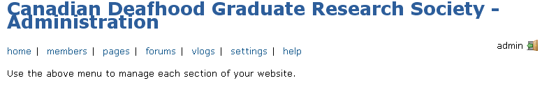
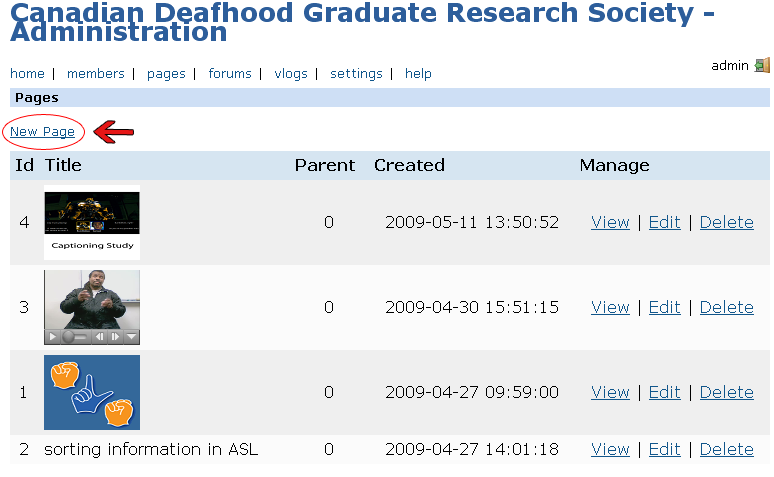
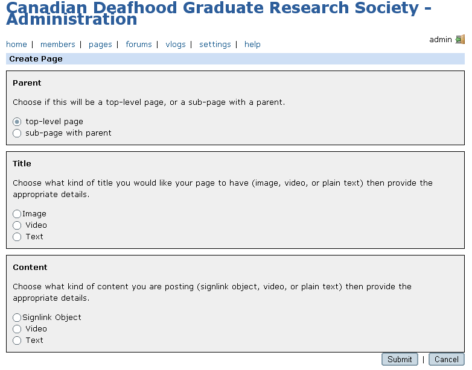
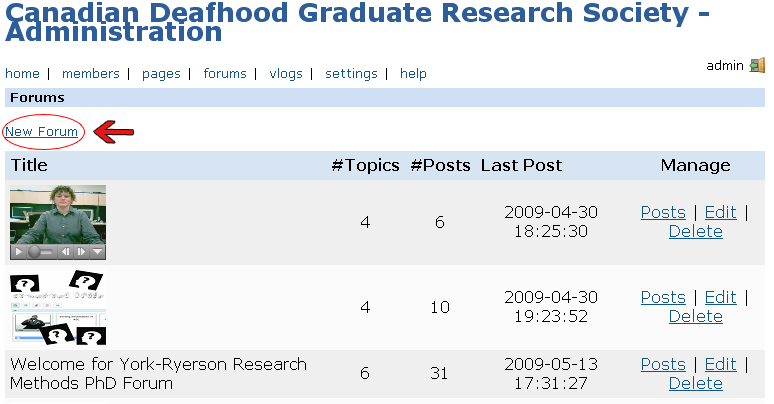
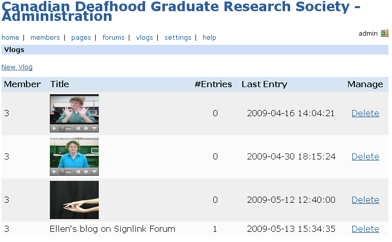
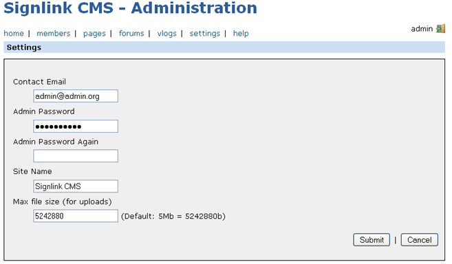

SignlinkCMS is an on-line content management system developed specifically for users of sign languages (e.g., American Sign Language - ASL, Langue des signes québécoise -LSQ, British Sign Language - BSL).
SignlinkCMS supports sign language-based web pages that are produced by Signlink Studio v2.0 (a free authoring tool that is available from www.signlinkstudio.com), videos, images and text.
In SignlinkCMS, icons and other visual cues are used to convey information to the website members instead of using text. This creates an immersive sign language based experience for website members.
SignlinkCMS features the ability to create and manage pages, forums and vlogs (short for video blogging).

2.1. Server Requirements
- MySQL 5.0+
- PHP 5 with GD library
- An email server
2.2. Installation
- Download “signlinkcms.zip” from the website (www.signlinkstudio.com).
- Unzip this file into a web-accessible directory on the server.
- Create a MySQL database for the site and make a note of your database name to enter into the config file in Step 4. Run the script “/install/signlink_schema.sql” on the database to set up the necessary tables.
- Create the configuration file by copying “/install/config_template.php” to “/include/config.inc.php”. Open config.inc.php in an editor and fill in the values for your server's MySQL connection details and the database name (from Step 3).
- Log into the admin area of your site (add “/admin” to your site url to get to the login page). Admin login: admin. Admin password: admin. CHANGE THE ADMIN PASSWORD immediately by accessing the settings menu item.
You should also set the administrator email address and maximum upload file size on this page.
- Set permissions for the “/uploads” directory, and its sub-directories, to be 777 (readable, writeable, and executable by all).
- Test that the email server is working with your installation by registering a test member on your site and using the “password reminder” (found on the site home page).
3.1. Logging in and out
The login page for administering SignlinkCMS can be found by adding “/admin” to your installation URL. For instance if your CMS is installed at “
www.signlinkstudio.com”, you can log into the administration area by navigating to “
www.signlinkstudio.com/Canadian_Deaf_Academics_SignlinkCMS/admin”.
The login name and password for the administration area is set during installation. Once logged in you will see a menu as shown in Figure 1. You can log out by clicking the logout icon on the far right.
Figure 1: SignlinkCMS administration area

3.2. Members
The “members” section allows you to edit the account information of all of the members. You can only change a member’s password or email address. Passwords must be greater than eight characters and use a combination of letters and numbers. Login names and email addresses must be unique.
You can also delete members. Note that deleting a member does not prevent that member from registering for a new login id and does not remove the member’s existing messages.
3.3. Pages
“Pages” (
Figure 2) is the space that the web site administrator can use to create web pages for the site members to view. For instance, you may wish to create a page to welcome members to your site or to explain your site policy for creating vlogs.
Click “new page” to create a new page. Creating a new page is very similar to creating a forum topic or replying to a message, as described in the user documentation. First, choose whether your page is to be a top level page (parent) or a sub-page (choose the parent page). Then choose a title format (image, video or text) and content format (signlink object, video or text) to submit. Click “submit” when you are done.
Below “new page”, you will see a list of the pages on your site. Each page listing shows the page id, title, the id of its parent page (a parent of 0 indicates a top-level page), the date and time the page was created, and links to “view”, “edit” and “delete” the page.
Figure 2: Administering pages

Figure 2a: Creating new pages

3.4. Forums
In “forums” you can create, edit and delete forums on your website, as well as view, edit and delete posts in each forum (
Figure 3).
To create a forum, click “new forum”. Specify a forum title (image, video or text) and click submit to create the forum.
Below the “new forum” link, you will see a list of the forums on your site. Each forum listing shows the forum title, the number of topics in the forum, the number of posts in the forum, the date and time of the last post and links to “posts”, “edit” and “delete”.
“Posts” allows you find and delete posts. Note that you must delete all replies to a post before you can delete the original post.
Figure 3: Administering forums

3.5. Vlogs
In “vlogs” you can create and delete vlogs (
Figure 4). You must create a vlog for a website member before that member can start “vlogging”. You cannot delete individual vlog entries or comments, but the “vlog owner” can edit and delete their own entries and comments made by others.
Figure 4: Administering vlogs

3.6. Settings
The settings page allows you to change your contact email address, the log in password, the site name and the maximum file size for uploads (
Figure 5). To change one or more of these elements, change the setting on the page and then press submit. Press cancel if you start to make a change and then change your mind.
Email address: You must submit a valid email address of the form “emailaddress@place.com” for this change to be accepted.
Administrator password: Passwords must be greater than eight characters and use a combination of letters and numbers to be valid.
Site name: A text name for the site. This will appear on the title bar of the browser.
Maximum file size for uploads: It is important that you and/or your systems administrator consider what limit to place on file upload sizes. Video and signed web pages often have large space requirements. If you make this setting too small, your members will not be able to create messages that say everything they want to say. However, without limitations, your members will have no incentive to compress their videos appropriately and server may become quickly overloaded. Also, very large files will take a long time for your site members to download and will impact on the usability of your site. The recommended maximum file size for SignlinkCMS is 5Mb, which allows for a signed web page with approximately one minute of video at typical compression rates.
Figure 5: Administration settings

The lead programmer for the SignlinkCMS was:
The other Signlink Project Team members are:
- Deb Fels
- Martin Gerdzhev
- James Hardman
- Ellen Hibbard
- Jan Richards
- Laurel Williams
The development of the SignlinkCMS has been generously supported by the Canadian Content Online Program of Canadian Heritage (
www.pch.gc.ca).